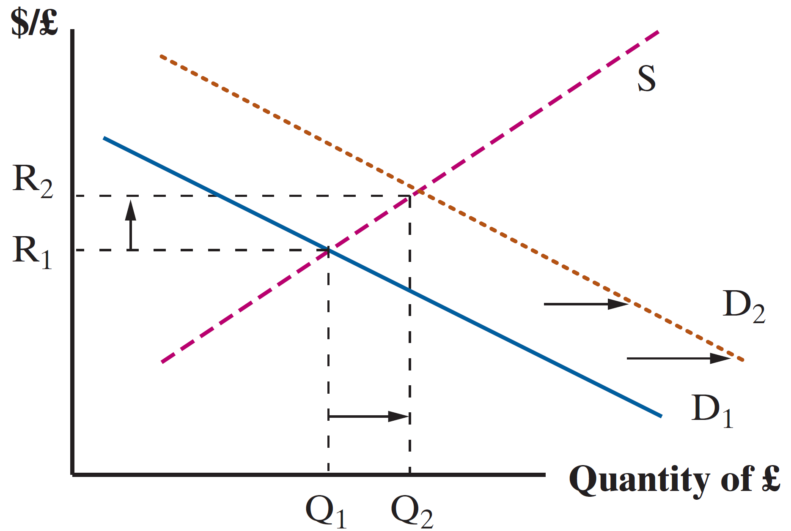
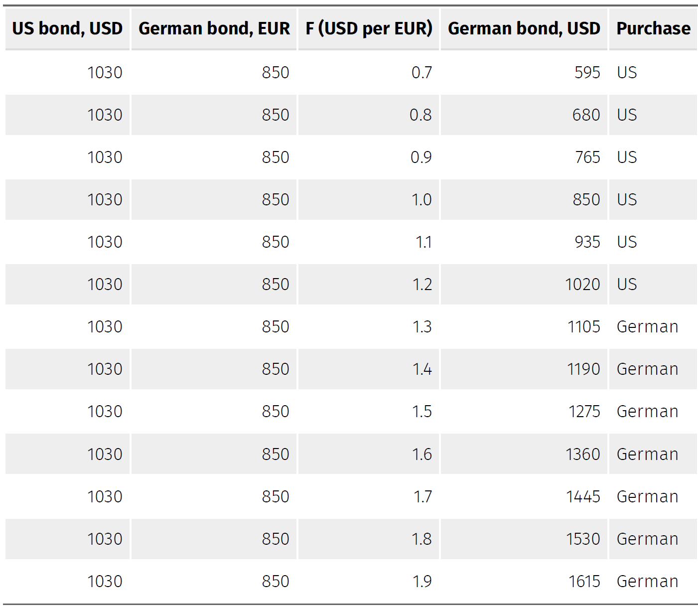

Global Finance | Exchange Rates Short & Medium Run
EC 380 - International Economic Issues
2025
FX Medium & Short-Run
FX Market: Medium Run
Consider it to be typically a 4 to 5 year range, where countries experience ebbs and flows of business cycle booms and busts
Consider the US economy going through a business cycle boom
During boom periods, incomes go up, aggregate demand of goods/services rises across consumers
A part of that will lead to increased demand for imports
This implies a greater need for foreign currency (to purchase imports)
FX Market: Medium Run
US incomes increase, demand for UK imports increases, so demand for GBP increases
FX Market: Short Run
The Short-Run will look relatively more chaotic
We will consider the Short-Run to be a time period of one year or less
We observe continuous day-to-day fluctuations in exchange rates

FX Market: Short Run
So what causes short-run changes in Exchange Rates?
- Interest rate adjustments, which can occur 4-5 times in a year
- Speculation, driven by exogenous shocks to the state of the economy
- Political scandals
- Discovery of natural gas deposits
- COVID outbreak
The latter contributes to a mechanism known as price discovery in exchange rates
FX Market: Short Run
Price Discovery is the trial-and-error process of discovering the equilibrium price in a market
If speculators believe a currency is overvalued, they sell that currency, driving its value down
If correct, currency moves towards an equilibrium and speculators are rewarded through arbitrage profits
If wrong, large losses are realized. This can often lead to bankruptcy if these risks were taken based on borrowed funds
These high stakes create a strong incentive to make the correct decision, bolstering the speed of market adjustments in the process
Interest Parity
FX Market: Interest Parity
Interest Parity Condition: Difference between the home and foreign interest rates should be equal to the expected change (appreciation or depreciation) of the exchange rate
\[ i - i^{*} = \dfrac{(F - R)}{R} \]
- \(i\) is the home interest rate
- \(i^{*}\) is the foreign interest rate
- \(F\) is the expected future exchange rate
- \(R\) is the current exchange rate
FX Market: Interest Parity Example
Suppose an investor has the choice to either invest locally or invest abroad in one-year bonds
More generally:
X year bond: After maturing for X years, the bond is paid back to the investor in full principal amount and includes a yield of interest accrued for X years
A bond will have the payoff equal to:
\[ P \times (1 + i)^{n} \]
Where \(P\) is the principal amount invested, \(i\) is the interest rate, and \(n\) are the years the bond accrues interest for before maturing
FX Market: Interest Parity Example
Suppose an investor is weighing the choice between a 1-year US bond and a 1-year German bond
They both are at the price of 1000 USD
The respective rates of return are \(i = 0.03\) (US) and \(i^{*} = 0.02\) (GER).
Each payoff is in its respective currency
\[ \text{US bond} = 1000 \times (1.03)^{1} = 1030 \text{ USD} \]
The German Bond requires more careful thought
FX Market: Interest Parity Example
A German Bond would be paid in euros, so we have to consider exchange rates to compare them
Recall the German Bond pays an interest equal to 0.02 (2%) in euros
The dollar value of this investment choice depends on the future exchange rate one year from now
Suppose the exchange rate today is 1.2 USD per EUR
Investor can buy 833.33 EUR in exchange for 1000 USD
\[ \text{EUR bond} = 833.33 \times (1.02)^{1} = 850 \text{ EUR} \]
FX Market: Interest Parity Example
To accurately compare the two choices, the investor must forecast the exchange rate in one years time
- We denote this as \(F\)
- If the expected future exchange rate E(F) is \(E(F) = 1.3 \text{ USD/EUR}\)
- Implies an expected foreign value of \(850 \times 1.3 = 1105 \text{ USD}\)
- The US Bond is worth \(1030\), so the foreign return of \(1105\) is more profitable
- The expected return of foreign investment is:
\[ i^{'} = \left[\dfrac{E(F)}{R} \times (1 + i^{*}) \right] - 1 \]
FX Market: Interest Parity Example
To guarantee \(E(F) = F\) is to remove the uncertainty from the setting
Hedge against exchange rate risk by signing contracts on the forward exchange rate market
Today’s spot rate \(R\) and market rate on one-year exchanges \(F\) indicate where the market sees the Exchange Rate moving in one year
If \(F > R\), the currency is expected to depreciate
If \(F < R\), the currency is expected to appreciate
FX Market: Interest Parity Example
In our example, investors were willing to sell off US Bonds in order to purchase German Bonds
- Funds will flow from the US to Germany, causing German Money Supply to increase
- A greater money supply implies lower interest rates, so \(i^{*}\) falls
- Demand for German Currency used to buy the bonds rises, so \(R\) rises
- Market moves towards interest rate parity
\[ i - i^{*} = \dfrac{(F - R)}{R} \]
FX Market: Interest Parity
What happens when \(F\) changes?
The future dollar value of German Bonds in USD changes too
The scale and direction of the change dictate the choice investors make
Let’s see what this might look like
FX Market: Interest Parity
FX Market: Interest Parity
Note: The textbook does a good job at explaining all scenarios on p. 226-227
These mechanisms playout somewhat like a self-fulfilling prophecy
If investors think USD will depreciate in the future, \(F\) rises
This causes return on foreign bonds to improve, causing demand on foreign currency to rise and the dollar’s spot rate \(R\) depreciates
A change in expectations about future exchange rates can lead to a similar change in the spot rate
FX Market: Interest Parity
We can think about the market playing out in two manners
- Covered Interest Parity (CIP)
- Uncovered Interest Parity (UIP)
CIP & UIP
CIP and UIP
Covered Interest Parity (CIP)
- Assume the investor has perfect foresight such that \(E(F) = F\)
Uncovered Interest Parity (UIP)
- Assume investor accepts risk involved and purchases with E(F) in mind
FX Market: CIP
Investors will trade until returns from either bond equalize, and all arbitrage opportunities are exhausted
\[ \text{CIP: } (1 + i) = (1 + i^{*}) \dfrac{F_{\text{USD/EUR}}}{R_{\text{USD/EUR}}} \]
In that case, investors are indifferent between either bond since their real returns are the same
This allows us to pin down the \(F\) necessary to achieve CIP
\[ F_{\text{USD/EUR}} = R_{\text{USD/EUR}} \times \dfrac{1 + i}{1 + i^{*}} \]
FX Market: UIP
This alternative method of investment allows us to determine how spot rates are established
The no-arbitrage condition for UIP is written as:
\[ \text{UIP : } (1 + i) = (1 + i^{*}) \dfrac{E(F)_{\text{USD/EUR}}}{R_{\text{USD/EUR}}} \]
This lets us pin down the \(R\) necessary to satisfy UIP
\[ R_{\text{USD/EUR}} = E(F)_{\text{USD/EUR}} \times \dfrac{1 + i^{*}}{1 + i} \]
We can calculate today’s spot rate if we know market expected exchange rate and these two respective interest rates
FX Market: CIP & UIP
Taking both our previous equations, and dividing one into the other on both sides:
\[ \text{CIP: } (1 + i) = (1 + i^{*}) \dfrac{F_{\text{USD/EUR}}}{R_{\text{USD/EUR}}} \]
\[ \text{UIP : } (1 + i) = (1 + i^{*}) \dfrac{E(F)_{\text{USD/EUR}}}{R_{\text{USD/EUR}}} \]
\[ \Rightarrow 1 = \dfrac{F_{\text{USD/EUR}}}{E(F)_{\text{USD/EUR}}} \]
Under the assumption of both types of investors (risky and riskless) exhausting all arbitrage opportunities, expected exchange rates should be equal to forward exchange rates
Exchange Rate Example
Exchange Rates
Q. Consider the following demand and supply curves of foreign currency, where ExR represents the local currency to foreign currency (e.g. USD-GBP) exchange rate. FC represents the units of foreign currency reserves held in the “local” economy.
\[\begin{align*} D: ExR = 57 - 0.061FC \;\;\; ; \;\;\; S: ExR = 2 + 0.012FC \end{align*}\]
What is the market clearing rate of exchange and the associated level of foreign currency reserves?
Consider a case where the market anticipates a new technology being released abroad, which causes demand for foreing currency reserves to rise by 2 units, such that the new demand curve can be represented by \(D' = D + 2\). What are the new exchange rate and currency reserve values?
How would you describe the change in both currencies? Which has depreciated and which has appreciated?
Question 01
\[\begin{align*} D: ExR = 57 - 0.061FC \;\;\; ; \;\;\; S: ExR = 2 + 0.012FC \end{align*}\]
Find the equilibrium values of ExR and FC
\[\begin{align*} \text{Demand} &= \text{Supply} \\ 57 - 0.061FC &= 2 + 0.012FC \\ 55 &= 0.073FC \\ FC &= 753.42 \end{align*}\]
\[\begin{align*} ExR &= 2 + 0.012(753.32) \\ ExR &= 11.04 \end{align*}\]
Question 02
D’ = D + 2
\[\begin{align*} \text{New Demand} &= \text{Supply} \\ 57 - 0.061FC + 2 &= 2 + 0.012FC \\ 57 &= 0.073FC \\ FC &= 780.82 \end{align*}\]
\[\begin{align*} ExR &= 2 + 0.012(780.82) \\ ExR &= 11.37 \end{align*}\]
Question 03
How would you describe the change in both currencies? Which has depreciated and which has appreciated?
At first
\[\begin{align*} FC = 753.42 \; ; \; ExR = 11.04 \end{align*}\]
After change
\[\begin{align*} FC = 780.82 \; ; \; ExR = 11.37 \end{align*}\]
Foreign Currency has appreciated and Local Currency has depreciated
EC380, Lecture 10 | Exchange Rates SR/Medium